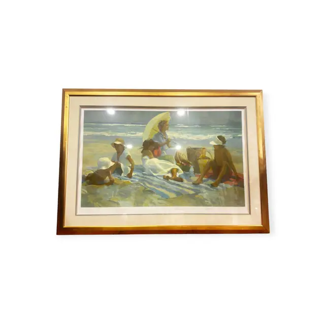
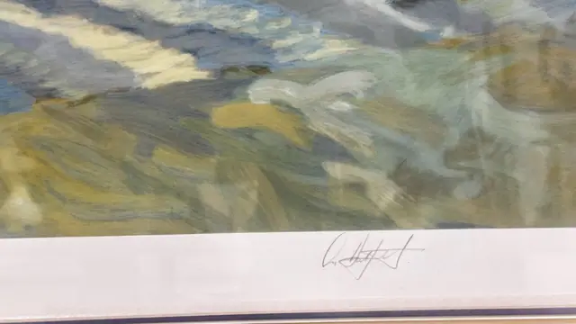
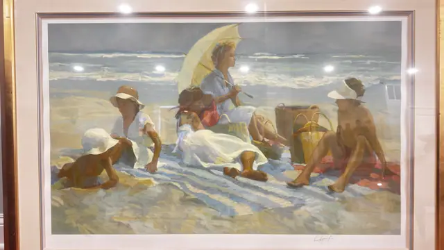

Paintings & Prints
Sunlit Beach Scene with Parasol and Bathers, Signed, Framed
· late 20th century reproduction of an early 20th century image
Price Upon Request



About the Item
A large, luminous seaside scene handled in loose impressionist strokes: a broad wedge of pale sand runs from the lower left to a bright turquoise sea, with a white and red striped parasol anchoring the left half and figures in white and cream summer dress grouped beneath it. Children in straw hats wade in the shallows at the right, their reflections broken across wet sand. The palette is dominated by cream, sand-ochre, aqua and touches of coral. Presented on a wide cream mat in a substantial gold frame under glass. Medium: colour lithograph or giclee reproduction on paper. Signed lower right of the image. Condition: Strong glass glare and reflections in every photograph; a faint pencil inscription sits in the lower left margin. No tears, foxing or surface damage visible.
Details
- Creation Year:
- late 20th century reproduction of an early 20th century image
- Dimensions:
- Height: 38.3 in (97.28 cm)
Width: 52.7 in (133.86 cm)
outside of frame - Medium:
- colour lithograph or giclee reproduction on paper
- Period:
- 20Th
- Condition:
- Offered in the condition shown in the photographs.
- Reference Number:
- VO-260
- Documentation:
- No certificate photographed.